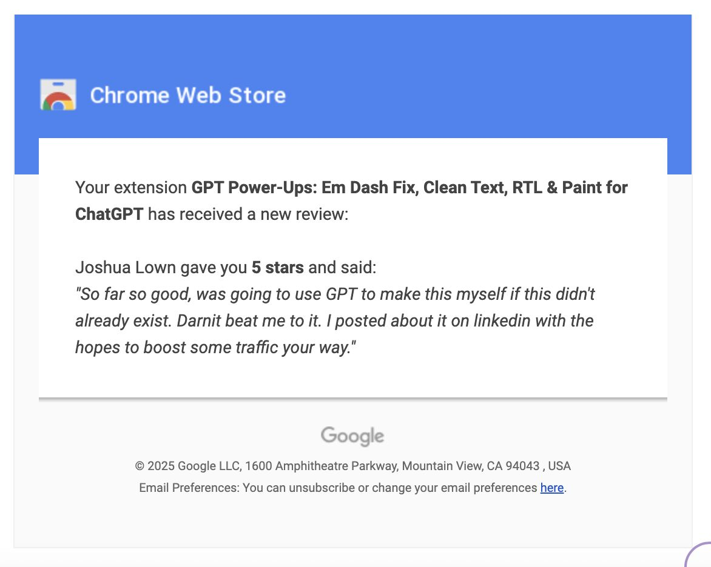

איזה כיף לקבל ביקורת מאדם אקראי בחנות התוספים של גוגל!
פורסם במקור ב LinkedIn
איזה כיף לקבל ביקורת מאדם אקראי בחנות התוספים של גוגל!
בניתי תוסף ל-ChatGPT שהופך את כיוון הטקסט מימין לשמאל, מסיר em-dash, ומאפשר לצייר על גבי המסך (חינמי) ושחררתי אותו לעולם
חינמי אומר שגם אין תקציב (או זמן או חשק) לפרסם, אז נחמד לקבל בוקר אחד הערכה מאדם זר ברשת שנתקל בתוסף ומצא אותו שימושי (כמוני) 🤗
אם אתם רוצים להזכר במה מדובר - זה הפוסט המקורי:
https://lnkd.in/dUcAP_Xv
